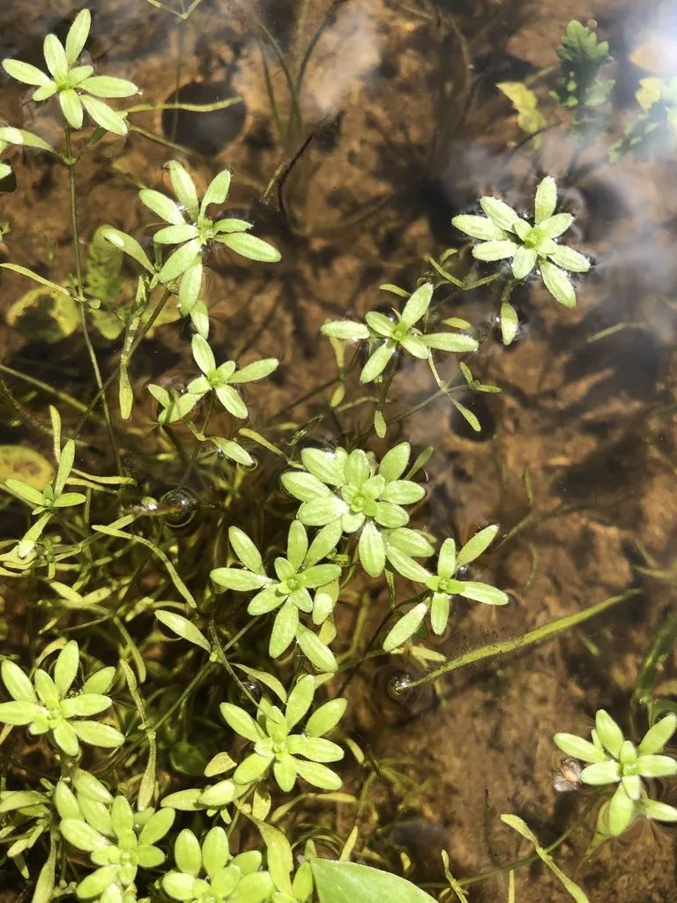

水生植物 · 植物界
水马齿 Callitriche palustris

植株矮小的一年生水生草本，茎细弱、叶对生，顶端的浮水叶聚成莲座状，常见于浅水、沟渠和湿地，是水质指示植物。
- 分类
- 门被子植物门纲木兰纲目唇形目科车前科属水马齿属
- 栖息环境
- 池塘、沟渠、水田和湿地的浅水处，也能在潮湿泥地上生长
- 地理分布
- 北半球温带和亚热带广泛分布，中国各地常见
- 保护级别
- 暂无评估
物种志
水马齿为车前科水马齿属一年生草本，水生或湿生。茎细弱，长 5–30 厘米，浮于水面或匍匐于泥上；叶对生，沉水叶线形，浮水叶倒卵形至匙形，在茎顶聚成莲座状。花极小，单性，腋生，无花瓣，花期 4–8 月；果实为扁圆形的分果。
水马齿广泛分布于北半球的温带和亚热带，中国各地都有，常见于池塘、沟渠、水田和湿地的浅水处。它喜光、耐寒，能在水质清洁的静水中形成小片群落，也可在潮湿的泥地上生长。水马齿的形态随水深变化很大，沉水叶和浮水叶形状差别明显，这是对水环境的适应。它对水质污染较敏感，常被用作水体清洁度的指示植物。目前水马齿没有IUCN 的正式评估，因其分布广泛，尚未被列为受威胁物种。
形态与习性
- 茎细弱，长 5–30 厘米，漂浮或匍匐
- 叶片对生，沉水叶线形，浮水叶聚成莲座状
- 花期4–8 月，花极小，单性，无花瓣
- 果实扁圆形的分果，成熟后分裂成小瓣
- 生境浅水、沟渠、水田和潮湿泥地
- 指示作用对水质污染敏感，可指示水体清洁度
趣味知识
- 水马齿的叶子会随水深改变形状，水下的细长、水面的宽圆。
- 它顶端的一圈浮水叶像一朵绿色的小莲花，常被误认成浮萍。
- 水质变差时水马齿会最先消失，因此可用来判断水体是否清洁。